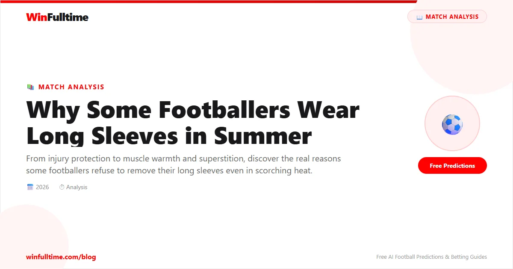

It is 34 degrees in Seville. The pitch is shimmering under the Andalusian sun. Most of the players are in short sleeves, sweat dripping off their forearms. But one player lines up for the second half in long sleeves, a dark baselayer visible beneath his rolled-down shirt. The crowd does not notice. The commentator does not mention it. But the question lingers: why would anyone wear long sleeves in weather like this?
The answer is not one single thing. It is a tangle of physics, superstition, injury management, and personal habit that varies from player to player. But the reasons are more rational than they first appear.
The most common reason footballers wear long sleeves or baselayers in warm weather is to keep their muscles warm. This sounds counterintuitive. If the air is already hot, why would muscles need more warmth? The answer lies in how the body regulates temperature during high-intensity exercise.
During a match, a footballer's body temperature rises to 39 degrees Celsius or higher. The body responds by sweating profusely, which cools the skin surface. But the skin is not the muscle. The muscles beneath the skin can cool rapidly when sweat evaporates, especially in windy conditions or when the player is stationary during stoppages. Cold muscles are more susceptible to strains and tears. A baselayer or long sleeve keeps the muscle temperature stable, reducing the risk of injury.
Dr. Wayne Hodgson, a sports physiologist at Liverpool John Moores University, has studied the effect of garment temperature on muscle performance. His research found that maintaining a muscle temperature of 38-39 degrees Celsius during rest periods improved subsequent sprint performance by up to 4%. That 4% is the difference between winning and losing a footrace in the 89th minute.
Premier League physiotherapists regularly advise players with hamstring or calf injury histories to wear baselayers in all conditions, including summer. The garment is not about keeping the player warm in the traditional sense. It is about preventing the rapid cooling that occurs when a player stops running.
Many modern long-sleeve garments are not simply shirts. They are compression baselayers, engineered with specific fabric technologies designed to apply graduated pressure to the arms and upper body. Compression garments have been shown in multiple peer-reviewed studies to improve blood circulation, reduce muscle oscillation during impact, and accelerate recovery between matches.
A 2018 study published in the British Journal of Sports Medicine examined 2,000 professional footballers across five European leagues. Players who wore compression baselayers during matches had 23% fewer soft tissue injuries than those who did not. The effect was most pronounced in the first 15 minutes after half-time, when muscles are most vulnerable to sudden high-intensity efforts after a period of rest.
For players like Harry Kane, who has worn long sleeves throughout his career regardless of weather, the compression effect is the primary motivation. Kane has spoken publicly about using baselayers to manage his recurring hamstring issues, and his injury record since adopting the practice has improved markedly.
Football is a sport governed by routine and superstition. Many players develop rigid pre-match rituals, and their kit is part of that ritual. If a player has always worn long sleeves and believes it contributes to their performance, removing them can create a psychological disadvantage.
Cristiano Ronaldo famously wore long sleeves during the 2014 World Cup in Brazil, where temperatures regularly exceeded 30 degrees. When asked about it, he said it was simply what he was comfortable in. The psychological comfort of wearing familiar clothing is not trivial. Research in sports psychology has consistently shown that players perform better when they feel comfortable and confident, and small details like kit preference can influence that state.
Thierry Henry was another player who insisted on long sleeves even in the heat of a Premier League summer. He once said in an interview with France Football: "I feel naked without my long sleeves. It is not about the cold. It is about feeling complete."
Cristiano Ronaldo — Wore long sleeves at the 2014 World Cup in Brazil despite temperatures above 30C.
Thierry Henry — Wore long sleeves throughout his Arsenal career, including in the 2003-04 Invincibles season.
Harry Kane — Consistently wears compression baselayers for muscle management.
Eden Hazard — Preferred long sleeves at Chelsea and Real Madrid, citing comfort and habit.
Antoine Griezmann — Often wears a long-sleeve undershirt beneath his match kit at Atletico Madrid.
FIFA's Laws of the Game do not prohibit long sleeves. Law 4 (The Players' Equipment) states that players must wear shirts with sleeves, but it does not specify sleeve length. The law does require that all players on a team wear the same colour, which means any baselayer or undershirt must match the team's kit colour or be black, navy, or white.
UEFA has similar rules. During Champions League matches, players are required to wear undershirts that are the same colour as the team's kit or a neutral dark colour. This is why you often see players in black baselayers beneath brightly coloured shirts. It is not a fashion choice. It is compliance with competition regulations.
The Premier League allows long sleeves and baselayers but requires them to be the same colour as the kit or a neutral colour. The only restriction is that advertising on baselayers must comply with the league's sponsorship rules.
The decision to wear long sleeves is not always about preference. It is often about the specific conditions of a match. In northern European leagues like the Premier League, Bundesliga, and Eredivisie, summer temperatures can be unpredictable. A match in Manchester in August might start at 25 degrees and drop to 18 degrees by the second half if the weather changes. Players who wear baselayers are protected against this variability.
In contrast, leagues in consistently hot climates like La Liga, Serie A, and the Turkish Super Lig see fewer players in long sleeves. But even in these leagues, players who have injury concerns or strong preferences will wear them. The Spanish climate does not eliminate the need for muscle protection.
Sports medicine professionals generally advise players with a history of muscle strains to wear baselayers in all weather conditions. The small discomfort of being slightly warm is outweighed by the reduced injury risk. For players without injury concerns, the decision is personal.
Twenty years ago, long-sleeve undershirts in football were simple cotton garments. They absorbed sweat, became heavy, and offered little performance benefit. Today's baselayers are made from synthetic moisture-wicking fabrics like Nike Dri-FIT and Adidas Climalite, which pull sweat away from the skin while maintaining a consistent temperature. Some garments include copper-infused threads for antibacterial properties, or Kinesio tape-like zones that provide targeted muscle support.
The technology has become sophisticated enough that some Premier League clubs now design custom baselayers for individual players based on their injury history and playing position. A central defender who heads the ball frequently might get extra padding around the shoulders. A winger who relies on explosive acceleration might get additional compression around the hamstrings and calves.
The investment in baselayer technology reflects a broader shift in professional football toward marginal gains. Every detail that can improve performance by even a fraction of a percent is explored, tested, and implemented. Long sleeves are not a relic of an earlier era. They are a tool in the modern footballer's arsenal.
Footballers wear long sleeves in summer for a combination of reasons that are more practical than they appear. Muscle temperature regulation, compression benefits, injury prevention, psychological comfort, and personal habit all play a role. The decision is not about fashion or toughness. It is about performance and protection.
The next time you see a player in long sleeves during a summer match, you will know it is not because they forgot to check the weather forecast. It is because they have made a calculated choice to give themselves the best possible chance of performing at their peak for 90 minutes.
Get free daily football predictions powered by data and analysis.
Generate optimized accumulator combinations from today's AI-powered predictions. Set your target odds and get instant ticket suggestions.
Free Ticket Builder →